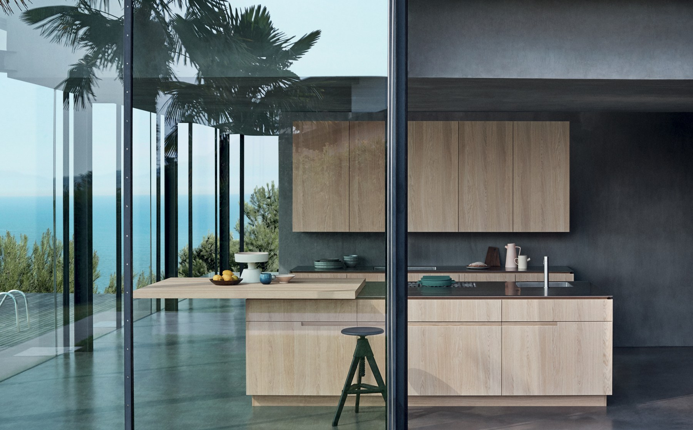
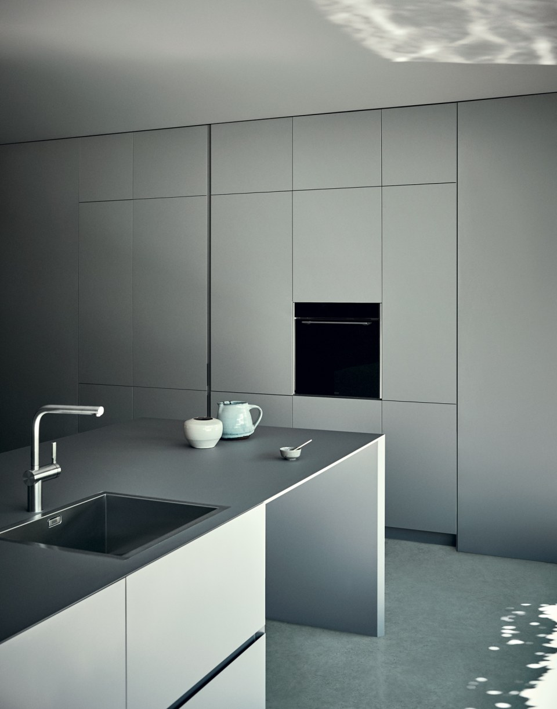
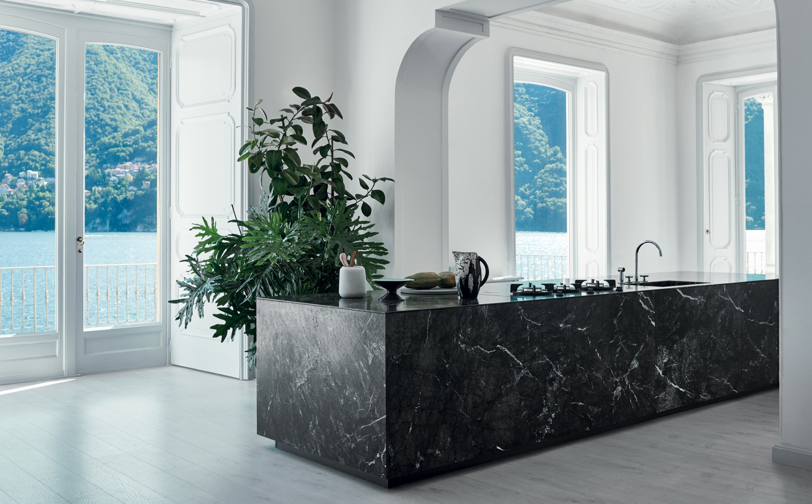
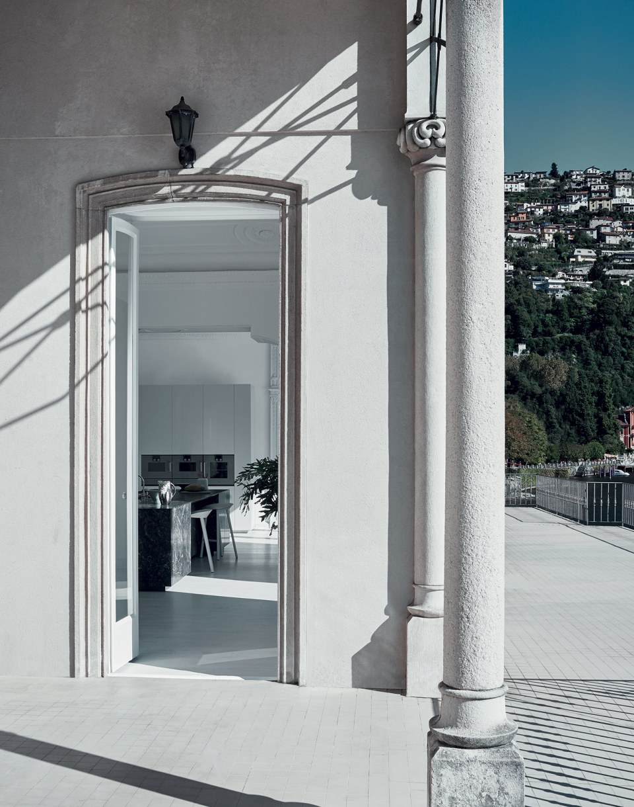
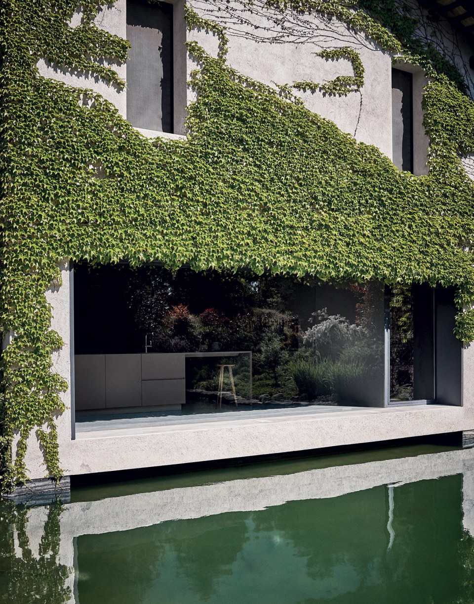

N_Elle
Design by R&D Cesar
N_Elle — система с дверцами толщиной 2,2 см, скошенными под углом 45° по периметру. Этот приём визуально убирает толщину фасада, создавая ощущение невесомости и подчёркивая чистоту линий в любой компоновке.
Система поддерживает различные способы открывания: push-to-open для полностью безручковых решений и системы Inside grip с интегрированным захватом. Оба варианта сохраняют гладкость поверхности и единство плоскости фасада.
N_Elle органично сочетается с деревянными шпонами, мраморными столешницами и металлическими вставками — материалами, которые усиливают лаконичность формы, не нарушая её целостности.


Я ищу главное во всём. Научившись быть избирательным, я нашёл новые пространства в своей жизни — свободные от лишнего, наполненные тем, что действительно важно. Это не аскетизм, а осознанность: понимание того, что красота рождается в точности, а не в избыточности. N_Elle создана командой R&D Cesar — внутренним бюро фабрики, которое работает на пересечении инженерной мысли и архитектурного видения. Скошенный профиль под 45° — это не просто деталь: это принципиальное решение, которое меняет восприятие фасада целиком. Пространство, где нет лишнего, становится больше — и как комната, и как возможность.



Essentials
Когда всё лишнее отброшено, форма говорит сама за себя. N_Elle строится именно на этом принципе.
Ультратонкий фасад и безручковые решения — не компромисс, а намеренный выбор в пользу чистоты и долговременной выразительности. Push-to-open и Inside Grip: два способа сохранить безупречную плоскость.